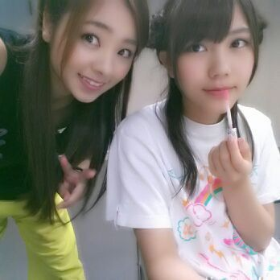

| 2013/10 09 Wed | 川村真洋 代々木体育館ファイナル☆そして ７枚目選抜発表！！ ろってぃ- |
今日も明日もこんばんは(/-＼*)
川村Rottyです☆
日曜日!!!
『真夏の全国ツアーファイナル』!!!
おつかれさまです( ・∇・)
おかげさまで ろってぃ-も...
お激しい筋肉痛であります。
昨日はヒールを履き
足をガクガクさせながら
ホームセンターを歩き回っていました^^
今回は、ファーストからの全曲中 26曲をひろうしました！
その内の22曲 ろってぃ-歌いましたよ！
ろってぃ-はほぼほぼステージにいました あーはん(*´ω｀*)。
こんなに大きな所で
乃木坂の単独ライブができること.
最初はちょっぴり疑っちゃいました.
本当に代々木体育館を乃木坂46の
お客さんだけで埋めることができるのだろうかと。(´・ω・)
でもステージに立ってオープニングが
始まった瞬間、色んな色のサイリウムが
この広い空間をビッシリ埋めていて、その光景が目に写った瞬間、涙がこぼれおちました。初めてかもしれません。
始まる前に 泣いたのは。
スタンバイ中から...
というかヘアメイク中から
不安・焦り等々 色んな感情にやられ 一生懸命涙をこらえながら準備してました(*^^*)
いつもの本ステージ プラス
長〜い花道があって外周があって
センターステージ、Bステージ...トロッコ
といっぱいステージがあって
今までやってきたライブとは
本当に全然ちがっていました♪
花道や外周で 走りまわってるRotty
見てくれましたかあ？？？
本当に、最高な思い出をどーもありがとう。 今回 真夏の全国ツアーのライブに
たずさわってくれた
スタッフの皆さん、メンバーの皆、
そして ファンの皆さん。
本当に 楽しい時間を一緒に作ってくれて
ありがとうございました ！
色々書きたいことあるから 、
もし気になってたこととかあったら
是非コメントしてください(*^^*)
答えます ♪
ーーーーーーーーーーーーーーーーーー
あと、 サプライズ発表。
昼に 武道館でのライブ決定の
嬉しいサプライズ発表があり
夜に ７枚目の選抜発表がありました。
すいません。今の自分のこの気持ちを
どう言葉に表したらいいか分からなくてずっと悩んでいました。
blogが書けなくって少し日にちが
あいてしまいました。
サプライズ発表って嬉しい報告を
するもんぢゃないのかな？って
思いました。
選抜から外れたメンバーの推しの方もいっぱいいるのに、、、
その方たちも 楽しむためにライブにきて楽しい気持ちでお家に帰りたかったはずなのに...
結局 たくさんの乃木famの方を
最後の最後に悲しい気持ちにさせてしまった。
どーして サプライズ発表で選抜発表しちゃうんだろう？って
私達は思っていました。 本当にごめんなさい。
今回、選抜に入れなかったです。
ごめんなさい。
もう流石に７枚目にまできて
『またアンダーか...もうそれなら
他の選抜メンバーに推し変しちゃおかな』って思われるんぢゃないか。
Rotty夢☆の方にも見捨てられるんぢゃないか... って。
ぶっちゃけ本当はこわいです。
お願いです。
私はこのまま終わるつもりなんて
１?もございません！
絶対にいつか 見返します^^
だから 離れないでください。
倍返しだ〜(´；ω；`)ぃゃ...５倍返し位するつもりです。
今まで強気でいたけど、
今回は皆に弱音はいちゃうなぁ...(´・ω・)
あ〜涙がとまらん
悔しいです。
ななみんblogにも書いてあったけど
大人の判断に メンバーは不満を抱えております。
川後 みさ ひめかが
初選抜入りしたことは
本当に本当に本当に嬉しいです^^
あと、最後に
1つ勘違いしないで欲しいことがあります。
○○が足りないから選抜に落ちた。って
考えは違います。
今回、さゆにゃん と かな と ゆうりとみなみが落ちてしまったけど
この３人は○○が周りよりおとっていたから選抜メンバーから外されたんだ。って
考えは辞めてほしいです。
いつも支えてくださっている
ファンの皆さん、
本当にありがとうございます。
本当に絶対に 皆さんを幸せにします！
夢はそんな簡単に叶うもんぢゃないけど
叶えます(^w^)
いつも一緒にいる川後Pちゃんと♪

みさ と ひめか と 川後は
選抜で絶対に爪あと残せるはずだよ(*^^*)
ファイナルの、Rottyだお。
おやすみなさい...。のし